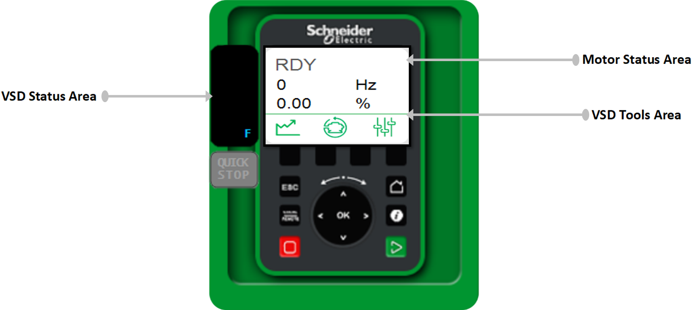
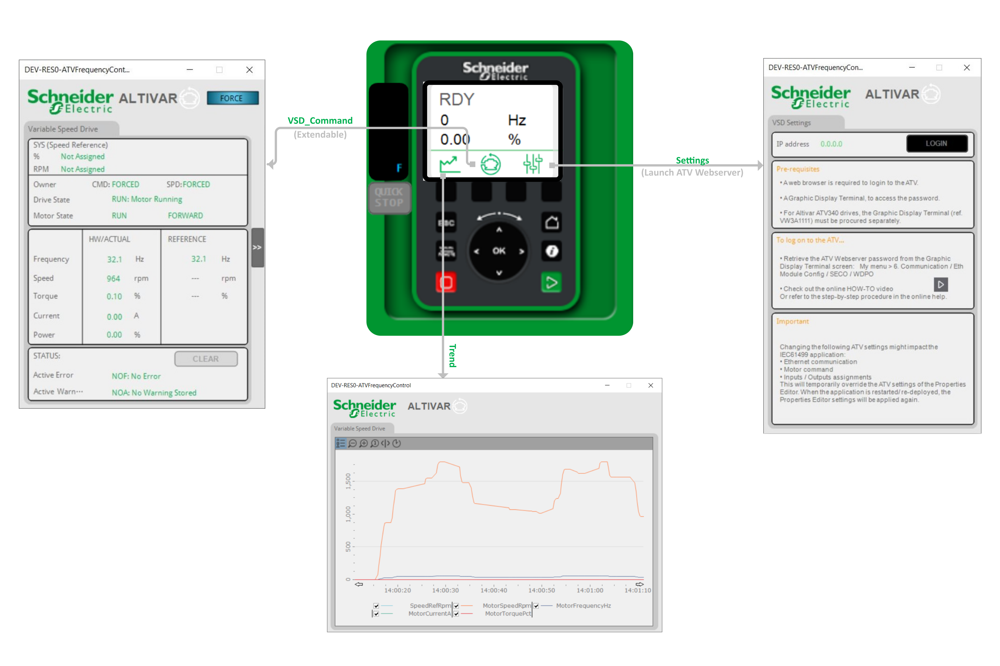
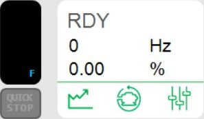
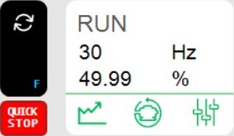

ATVFrequencyControl - sDrive
Abstract
ATVFrequencyControl - sDrive is the HMI representation of the ATVFrequencyControl module. You can access several faceplates by clicking different active zones of ATVFrequencyControl - sDrive, to perform the following actions:
-
Monitor and take manual control of the VSD .
-
Visualize the key Motor parameter values.
-
Behavior: Configure the VSD parameters.
Defining the HMI Security Group
Follow these steps to Define the HMI Security Group of your ATVFrequencyControl hardware CAT:
|
Step |
Action |
||||||||||||
|---|---|---|---|---|---|---|---|---|---|---|---|---|---|
|
1 |
Configure your physical device:
|
||||||||||||
|
2 |
Configure your logical device:
|
||||||||||||
|
3 |
Create users:
Result: 
|
||||||||||||
|
4 |
Configure the security:
Result: 
|
||||||||||||
|
5 |
Configure your hardware configuration:
|
||||||||||||
|
6 |
Drag and drop the CAT instances to the canvas:
|
||||||||||||
|
7 |
Configure the security group level of your hardware CAT:
NOTE: If the user's level is equal to or higher than the security group level of the following parameters, then he is authorized to perform the associated actions..
|
 to open the
to open the  to open the
to open the 

 to open the
to open the  to add a new logical device.
to add a new logical device.


 .
.

 to open the
to open the 

Description
The following figure illustrates the active elements of the ATVFrequencyControl:

Usage
This item can be dragged and dropped to an HMI canvas, once the ATVFrequencyControl module has been instantiated.
Components
The following figure illustrates the active components of the ATVSpeedFrequency - sDrive:
You can access the various faceplates to control the Drive, observe the graphical representation of the drive parameter values and perform a Web-based optimization.
This faceplate allows you to perform the following actions:
-
Trend: use this zone, to observe and monitor the graphical representation of the drive parameter values.
-
Commands: to select the drive operating modes.
-
Configuration: to configure the ATV drive settings.


